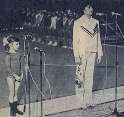

Daniela Silivas (ROM)
1985 World B Champion
1987 European AA Champion
1987 World UB and FX Champion
1988 Olympic UB,
B and FX Gold Medalist
1989 European FX Champion
1989 World UB, B and FX Champion

Daniela Silivas and Nadia
Comaneci in 1978.
Medal Total
- Olympic Games: 3 Gold, 2
Silver, 1 Bronze
- World Championships: 7
Gold, 2 Silver, 1 Bronze
- World Cup: 2 Silver, 1
Bronze
- European Championships: 5
Gold, 3 Silver, 2 Bronze
Daniela was born on May 9, 1972
in Deva and began gymnastics at age 6. Her numerous titles from 1985 to
1989 make her one of Romania's best and most successful gymnasts. She
lives in Georgia and is a coach; she and her husband have three children (2 sons and a daughter).
The Romanian federation listed her birth year as 1970; it was only a few years
ago that Silivas admitted she was two years younger than previously thought.
Competition Results
- 1981
Daciada (Category IV): 1st AA
1982
- Jr. Romanian Championships: 1st AA, 1st V, 1st B, 1st
FX
- Peace Cup: 1st AA
Romanian Cup (Category III): 1st AA
-
- 1983
- Intl. Junior Championships: 1st AA, 1st FX,
4th B
Intl. Junior Championships (Sendai): 2nd FX
ROM Championships (Category II): 1st AA
- 1984
- Blume Memorial: 1st AA
- Coca-Cola International: 2nd AA, 3rd UB, 3rd B
- Jr. Balkan Championships: 1st AA
Jr. European Championships: 4th AA, 1st B, 2nd UB, 2nd
FX, 7th UB
Jr. Friendship Tournament (Druzhba): 2nd Team, 1st AA, 1st UB, 3rd FX,
4th B
- Moscow News: 8th AA, 1st B, 5th FX, 8th
V
- Paris Grand Prix: 2nd AA, 1st B
- Riga International: 2nd AA, 1st V, 1st
FX, 2nd UB, 2nd B
-
- 1985
- American Cup: 3rd AA, 1st B
- Balkan Championships: 1st Team, 3rd AA, 2nd UB, 2nd FX,
3rd B
- Champions All: 1st AA
- DTB Cup: 5th AA, 1st B, 1st FX, 5th UB
- ESP-ROM Dual Meet: 1st Team, 1st AA
- European Championships: 8th AA, 3rd FX,
5th B
- FRG-ROM-SUI Tri-Meet: 1st Team, 3rd AA
- Gander Memorial: 2nd AA
- HOL-ROM Dual Meet: 1st Team, 2nd AA
- International Championships of Romania: 1st AA
- Intl. Mixed Pairs: 3rd Team
ROM Championships: 2nd AA, 1st B, 1st FX
- ROM-CSSR Dual Meet: 1st Team, 4th AA
- World Championships (Montreal): 2nd Team,
7th AA, 1st B, 4th FX
-
- 1986
- Ahoy Cup: 1st UB, 1st FX, 3rd V
- Antibes International: 1st AA, 1st FX
- Balkan Championships: 1st Team, 1st AA, 1st UB, 1st B
- DTB Cup: 1st AA, 1st UB, 1st B, 1st FX
- ESP-ROM-BUL Tri-Meet: 1st AA
- International Championships of Romania: 1st AA, 1st B,
1st FX, 2nd UB
ROM Championships: 1st AA, 1st UB, 1st B
- ROM-CSSR Dual Meet: 1st Team, 1st AA
- World Cup: 2nd AA, 2nd B, 3rd UB, 4th
V, 4th FX
-
- 1987
- Avignon International: 1st AA
- DTB Cup: 1st AA, 1st B, 1st FX, 2nd V, 3rd UB
- European Championships: 1st AA, 1st UB, 1st B,
1st FX, 2nd V
- Gander Memorial: 2nd AA
ITA-ROM Dual Meet: 1st Team, 3rd AA
ROM Championships: 1st AA, 1st UB, 1st B, 1st FX
- SUI-ROM Dual Meet: 1st Team, 2nd AA
- Swiss Cup: 1st AA
- World Championships (Rotterdam): 1st Team, 3rd
AA, 1st UB, 1st FX
-
- 1988
- Chunichi Cup: 1st AA, 1st V, 1st UB, 1st B, 1st FX
- DTB Cup: 1st AA, 1st B, 1st FX, 2nd V, 2nd UB
- International Championships of Romania: 1st AA, 1st
UB, 2nd V
- Olympic Games: 2nd Team, 2nd AA, 1st UB, 1st B,
1st FX, 3rd V
- ROM-CSSR-SUI Tri-Meet: 1st Team, 1st AA
- Tokyo Cup: 1st UB, 1st FX
-
- 1989
- Blume Memorial: 1st AA
- Chunichi Cup: 4th AA
- European Championships: 2nd AA, 1st FX, 2nd UB,
3rd B, 4th V
French International: 1st AA, 1st B, 2nd UB, 2nd FX, 6th V
- International Championships of Romania: 1st AA, 1st UB,
1st B, 1st FX, 2nd V
- Tokyo Cup: 7th B
- World Championships (Stuttgart): 2nd Team,
12th AA, 1st UB, 1st B, 1st FX
-
- 1991
- World Professional Championships: 5th B, 6th FX
This page was last updated on January 31, 2021.
© Gymn Forum